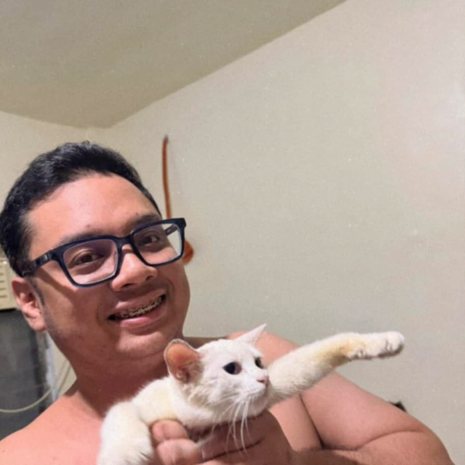
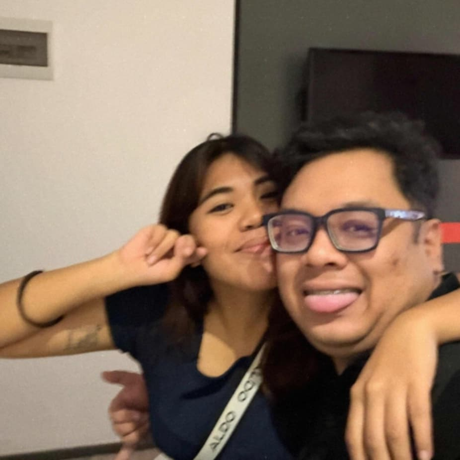

Love of mine,
This might be weird for you given how mean and unromantic i am usually. Haha, I'm sorry, I'm still a little bit jaded, but know that I'm slowly getting back some hollowed parts of mine now that i'm with you, and I'm so grateful to have you because of that =)
Firstly, I'd like to thank you for being there for me no matter what. I'm pretty sure you have absolutely no idea just how much you matter to me. I want you to know you've warmed and brightened parts of my life enough to soften me and my rough edges, maybe even helped erradicate some, in a way. Bago ako magsimula, kamusta ka? Madalas aminado akong di kita natatanong, pasensya na
I don't know if i should continue this letter in Filipino or English because I kind of want it to feel as personal as possible. Pwede ba? Pwede kaya? ...di ba 'to magmumukhang corny sa ibang mga parte? ...paano yung mga salita na hindi ko rin naman alam sa Pilipino?
See? I'm fussing over which language to use just to see which one would fit better for you to read it in a way that makes you feel like I'm right infront of you as you go along this letter. It's nerve-wracking, wanting to choose everything in the best way I could to make sure I deliver it the right way for someone special (this one's you, by the way, and only you.)
Whichever one I choose to go with though, I hope you feel my love either way. Sana, kapag binasa mo 'to, hindi ka maweirduhan.
For the past few months of being with you (despite the distance), I've been trying to keep something intact within me, trying to hold myself back in a way that would feel manageable. Sometimes my pacing's off from trying to keep it still, but I've figured it out: my love for you holds no bounds. it's radical, messy, sometimes consuming, absolutely ridiculous it vividly wraps my days with varieties of emotions. Na para bang binabalot ng makulay na ilaw at pinupuno ang bawat espasyo sa mundo ko, na para bang binabago ako
I'm grateful for being given the chance to receive your love, and for having you by my side. I said it before and I'll say it again: I absolutely adore all parts of you, whether it's the messy, unhealed parts of you, or the parts where you shine in the most, or just the parts that you show only to me, even. The constant checkups whether or not I'm attentive or awake whenever we watch something, your openings for discourse in between, the gentle tone and the calm that you still hold in your voice when you're raising something that bothers you, or the silliness of your stupid antics when making jokes, the willingness to change yourself for the better, or even just for the playful banter we share.
I love each and every detail the universe has given you in order to make you who you are right now, and all the details that come with that intricate soul of yours. I love you and the pair of pretty, expressive eyes you came with, the whole, deep voice and hearty laugh you fill places and voice calls with, the unruly curls that are actually soft when touched, the small speck of a mole on top of your nose, the small crater right by your eye that marks a part of a vivid memory from your childhood, the façade of a birthmark on your big, warm hands--- every little thing, Jeff Paolo, I've found to be absolutely ethereal and enthralling, in a way. And I'm not exaggerating, okay? I know it sounds like that but I can't say how much I fancy you in a way that doesn't sound absolutely cheesy at some point because admittedly, it kind of is. Wala akong reklamo at wala na akong magagawa, nagpapasalamat ako't nakilala kita
It's been a while. Since I've felt solace in someone. Since I've anticipated having someone's presence visit my days. Since I've let myself find a rock to lean on, to hold me down, to help me think things through. Whoever sent you to me definitely knew your where something I needed. And I guess you turned out to be something like that. Something I... wanted? Something I've grown to long for and keep.
I hope you keep shining as you are, and that you reach whatever goal you have at this point in your life. Know that I'm here if you need anything, and I'm also willing to be a more gentle version of myself if it warmly fits you and your needs better. Dumating man ang mga araw na hindi tayo nagtutugma, sana alalahanin mong hindi ako basta-bastang mawawala
I am growing, albeit at quite a slow rate, with you by my side. I'm glad I fell for someone like you. The gamer guy who has nerdy interests, is quite the soft hearted type he tears up more than I do (GOOD QUALITY BY THE WAY I AM NOT IN ANY WAY COMPLAINING PLEASE DO NOT TAKE IT NEGATIVELY I ABSOLUTELY APPRECIATE YOU BEING IN TOUCH WITH YOUR EMOTIONS), the courageous one who still has a lot of warm and overflowing love on his sleeve, the guy who's willing to be there for others, the one whose soul is wrapped in defenses to protect himself, but is willing to listen still. Manghang-mangha ako sa mga kakayahan mo at sa impluwensiyang ibinigay mo sa buhay ko
I feel like this letter's too long again, but then it also feels like I could go on forever. Thank you, really, for helping me be vulnerable enough to write again. For helping me feel things deeply again. For awakening this side of mine again. You have changed me in ways you wouldn't understand, made me do certain things I normally wouldn't do, and I may not be the first to say how thankful I am to have you, but I'd like you to know that my appreciation for you lasts for as long as I live, and for as long as my soul remembers your existence. No matter what happens, know that I'll be glad for you in your triumphs, and that I appreciate having met you. Halatang malayo sa nakasanayan mong ako ito, pero pagbigyan mo muna ako
It's crazy how time feels so fleeting when I'm with you. I guess that's just love, huh?
So thank you, baby, I love you very much, and I really don't care if I sounded so sappy this time. I think I've grown out of my own set of cringe to fully acknowledge that you've got me absolutely whipped to a degree and I kind of like it. Nais kong malaman mong wala akong pagsisisi sa bawat oras na kasama kita.
Having said all of this, I'd like to ask you if you could be my valentine? Will you be my valentine? =)
*If the answer is no the words and feelings I poured into this letter still exist and are absolutely true and I have no shame in admitting nor will I retract my words but that also doesn't mean I would not be bummed if you said no but it's okay though no pressure =)*
Love you lots! Mahal kita lagi, kahit anong mangyari, babi =)
Love always,
(informal na 'to parang babalutin ka na ata ng espirito ng maligno pag sineryoso ko rin 'to)
(Also, individual letter rin in a way yung Filipino lines, so if you read the Filipino lines separately it's still a full... poem? letter? in a way. I made it this way so both languages could satisfy what I'm trying to express, both together and individually. I love you :^) look at me thinking and constructing stuff this way for my baby, what a loser *not complaining though)